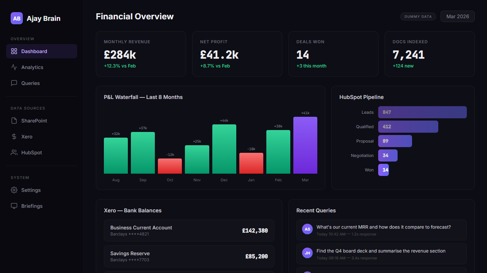

The schedule / Entry 01 / AI operations
OpsPilot.
ProductionIn daily use since 2025 / Oracle Cloud, systemd
The AI from chapter 2. It lives in Teams, reads every document my company has ever filed, pulls live accounting and CRM data, and drafts answers in my voice. Nothing sends without my approval.
I run finance and operations at a tech company. My day is split across Teams, SharePoint, Xero, HubSpot and email. Someone asks a question in one system, the answer lives in another, and the context for why it matters is in a third. I was spending hours just pulling data, missing follow-ups because nobody tracked who said what, and scrambling for context five minutes before meetings.
"What does the contract say about payment terms?" That's a SharePoint search. "Who hasn't paid us?" That's Xero. "What deals is the sales team working on?" HubSpot. "Tell me about this customer." That needs all three. The information always existed. It was just scattered across 6,124+ files, multiple systems, and years of accumulated documents.
Debit: before
- Dig through 6,124+ SharePoint files by hand
- Log into Xero, HubSpot, email and calendar separately for every question
- Miss follow-ups because nobody tracked who promised what
- Scramble for context five minutes before a meeting
Credit: after
- Ask a question in Teams, get an answer from any source in seconds
- Morning briefing with everything that matters before 9am
- Commitment tracker catches every promise, nudges when overdue
- Pre-meeting brief lands 15 minutes before every call
Someone asks a question in Teams. The pipeline triages it, figures out whether it needs documents, live accounting data, CRM data, or all three at once, and returns an answer as an Adaptive Card with approve, edit and reject buttons. Live data questions hit Xero or HubSpot directly, zero LLM cost. Document questions run a hybrid search. Cross-source questions go through a single orchestrator call with 28 combined tools. A PII blocker sits in front of everything that leaves.
- Teams webhook receives the message inside the Bot Framework turn
- Dedup gate drops repeats before they cost anything
- Smart triage, two layers: keywords first, a fast model for the rest. Work, personal or noise
- Intent router picks the source: documents, Xero, HubSpot, multi-source, reconciliation or journal
- Retrieval: BM25 + FAISS hybrid with reciprocal rank fusion and an AI reranker for documents; direct API reads for live data
- Multi-draft generation in my writing style, several answer shapes to choose from
- Sensitivity gate: UK PII detector, a hard blocker before anything can auto-send
- Adaptive Card builder formats the answer with sources and figures
- Approve, edit or reject. A human signs every entry. That's the design, not a limitation
| Test suite | Scope | Result |
|---|---|---|
| Document search | 50 production queries | 50/50 |
| Triage | 20 labelled messages | 20/20 |
| Intent routing | 45 queries across 6 sources | 45/45 |
| Conversation follow-up | 54 multi-turn cases | 54/54 |
| The search pipeline is frozen at 100% | No changes until it misses | |
- F.1Hybrid searchBM25 for keywords, FAISS for meaning, reciprocal rank fusion to merge them, then an AI reranker picks the top five. HyDE query expansion generates domain terms so vague questions still land on the right document.
- F.2Live data, no hallucination surface"Who hasn't paid us?" reads Xero receivables directly. "What deals are open?" queries the HubSpot pipeline. 17 direct API actions where the LLM never touches the numbers: formatted figures, straight back. Xero access is read-only by design.
- F.3Autonomous monitoringMorning briefing at 08:00, evening wrap at 17:30, deal-stage checks every five minutes in business hours. An invoice scanner reads PDFs from my inbox, extracts line items, matches them against Xero and flags duplicates and price drift. A commitment tracker detects promises in Teams and email and alerts when they slip.
- F.4DashboardA React dashboard on precomputed state: P&L, cash position, pipeline, receivables, engagement. FastAPI serves it from SQLite so the page never waits on a third-party API.
- F.5Personal growth journalEvery evening it writes a first-person diary entry from the day's activity, then a behavioural layer flags blind spots: unreplied messages, tone drift, neglected relationships. Weekly digest on Fridays.
- F.6Conversation memory and approvalPer-user context with a two-hour window and ten-turn memory, so "what about their payment terms?" knows who "they" are. Every answer returns as options; nothing goes out unapproved. It learns which answer style I tend to pick.

Nobody could find anything in 6,124 files. Now the files answer back.
| 02 | Trading Bot | Four AI agents that veto my trades. 62 sessions, zero impulsive trades let through. | Paper trading |
| 03 | Uni-Nation Digital | Website, inventory PWA and Hindi voice stock entry for the family fabric business. | Live |
| 04 | WhatsApp Smart | A Chrome extension that gives WhatsApp scheduling, AI replies and summaries. | Prototype |